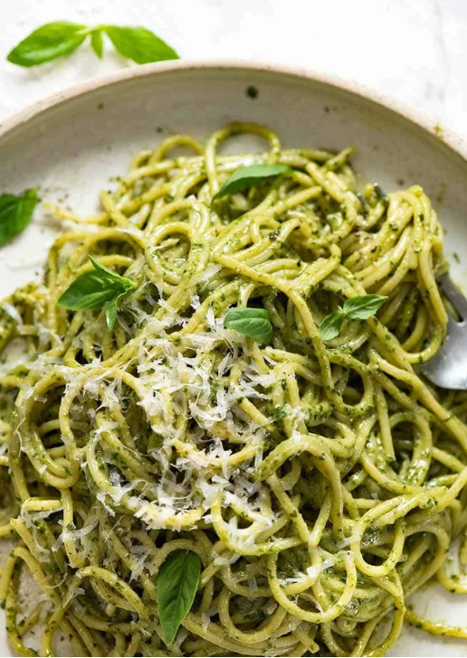

Spaghetti
Home

Pesto Pasta
Anyone can make a Pesto Pasta, but not everyone knows how to make
a pesto pasta that’s slick with plenty of pesto sauce without adding tons of
extra oil! Here’s how I make it.
Ingredients
- 1 (16 ounce) package pasta
- 2 tablespoons olive oil
- ½ cup chopped onion
- 2 ½ tablespoons pesto or more to taste
- salt to taste
- freshly ground black pepper to taste
- 2 tablespoons grated Parmesan cheese